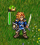

Indholdsfortegnelse
Tabelliste
Kampen om Wesnoth er et strategibaseret computerspil.
Opbyg en stor hær, gradvist ved at gøre rå rekrutter til veteraner. I senere spil tilbagekalder du dine stærkeste krigere og skaber en dødelig flok som ingen kan modstå! Vælg enheder fra et stort udvalg af specialister og håndpluk en styrke med den rigtige sammensætning til at den kan kæmpe på flere forskellige terræntyper mod al slags modstand.
Wesnoth har mange forskellige legender som skal spilles. Du kan kæmpe mod orker, udøde, og banditter på Kongedømmet Wesnoths stepper; kæmp med drager i bjergenes tinder, elver i Aethenwood, dværge i Knalgas store sale, og endda havmænd i Perlernes Bugt. Du kan kæmpe for at generobre Wesnoths trone eller bruge din magt over de udøde til at dominere de dødeliges land, eller anføre din gloværdige orkstamme til sejr over menneskene som har besudlet dit land.
Du vil kunne vælge blandt mere end 200 forskellige enheder (infanteri, kavaleri, bueskytter og troldmænd er bare nogle) og kæmpe slag spændende fra små baghold til slag mellem enorme hære. Du kan endda skabe dine egne specialiserede enheder, og skrive dine egne scenarier - eller endda hele kampagner. Du kan også udfordre dine venner - eller fremmede - og kæmpe i episke flerspiller fantasislag.
Indholdsfortegnelse
Den kendte del af det store kontinent, som Wesnoth befinder sig på, er normalt opdelt i tre områder: De nordlige lande, som normalt er lovløse; kongedømmet Wesnoth og dets lejlighedsvise fyrstendømme, Elensefar; og de sydvestlige elvers domæne i Aethenskoven og hinsides.
Kongedømmet Wesnoth ligger i centrum af landet. Grænserne udgøres af Den Store Flod mod nord, De Lave Bakkere i øst og syd, Den Grønne Sump mod sydvest og havet mod vest. Elensefar, en tidligere provins i Wesnoth, har Den Store Flod som nordlig nabo, en svagt forsvaret linje med Wesnoth mod øst, Perlernes Bugt mod syd, og havet mod vest. Der er ingen ledelse i de nordlige lande. De nordlige og østlige grænser er ikke faste, den sydlige grænse udgøres af Den Store Flod, og den vestlige grænse er havet.
Udover landet er spredte landsbyer hvor du kan tilse dine tropper og opnå den indkomst der skal til for at du kan understøtte din hær. Du skal også krydse bjerge og floder, trænge igennem skove, bakker og tundraer, og krydse åbne stepper. I hvert af disse terræntyper har forskellige skabninger tilpasset sig og kan her rejse og kæmpe bedre end de ellers kan i andre typer terræn.
Wesnoths verden beboes af mennesker, elver, dværge, orker, hestedrager, øgler, havmænd, nagaer og mange andre racer der er endnu mere specielle og vidunderlige. I hjemsøgte egne huserer udøde, spøgelser og genfærd. Hver har tilpasset sig sit terræn. Menneskene lever primært i de temperede steppe områder. I bakkerne, bjergene og i underjordiske huler bor orker og dværge. I skoven lever elverne. I havet og floderne dominerer havmænd og nagaer.
I spillet grupperes de forskellige racer i fraktioner; for eksempel så samarbejder orker ofte med trolde, og elver og dværge med mennesker. Andre fraktioner afspejler opdelingerne indenfor menneskenes samfund — for eksempel loyalister mod fredløse. I de fleste kampagner har du alene styrker fra en fraktion, men undertiden kan fraktioner indgå alliancer med andre, så du kan møde flere end en fraktion som modstander eller allieret i et scenarie.
Når Wesnoth først startes vises først en baggrund og en kolonne af knapper der kaldes for hovedmenuen. Knapperne virker kun med en mus. For du utålmodige anbefaler vi at du klikker på "Sprog"-knappen for at indstille dit sprog; herefter klikkes på "Prøvespil" for at lære de basale ting; herefter kan du spille kampagnen "To brødres sagn" ved at klikke på "Kampagner"-kanppen og vælge den fra listen.

- Vejledning
- Prøvespillet er et ægte, men simpelt spil som viser nogle af de basale ting du skal vide for at kunne få fornøjelse af spillet. At vinde eller tabe er ikke vigtigt i dette prøvespil, men det er, at lære hvordan det skal gøres. Klik på prøvespilsknappen for at begynde. I prøvespillet har du rollen som den unge prins Konrad eller prinsesse Li'sar, der lærer fra den ældre og mere erfarne troldmand Delfador - vær opmærksom ellers kan han finde på at gøre dig til en salamander.
- Kampagne
- Wesnoth er primært skabt til at spille en række kampagner. Kampagner er en række af forbundne scenarier. Klik på denne knap for at starte en ny kampagne. De bliver præsenteret for en række tilgængelige kampagner (flere kan hentes hvis du ønsker det). Vælg din kampagne og tast O.k. for at begynde eller afbryd for at vende tilbage til hovedmenuen. Hver kampagne har et sværhedsniveau: Nem, mellem (normal) og svær. Vi anbefaler mellem da dette niveau er udfordrende, men ikke svært. Du kan ikke ændre sværhedsgraden under spillet. I tilfælde af at du har specielt svært ved at komme igennem på nem kan vejledningen Grundlæggende strategi hjælpe dig. Når du har valgt sværhedsniveauet starter du med det første scenarie i kampagnen.
- Flerspiller
- Tryk på denne knap for at spille et enkelte scenarie mod en eller flere modstandere. Du kan spille over internettet eller på din egen computer mod computermodstandere eller andre spillere. Når du vælger denne knap vil et dialogbillede komme frem og give dig mulighed for at vælge hvordan du vil spille scenariet. For at lære mere så se eventuelt scenarier.
- Hent
- Tryk på denne knap for at hente et tidligere gemt spil. Du får en liste over de tidligere gemte spil. Vælg spillet og tast o.k. for at hente det og fortsætte, eller vælg afbryd for at vende tilbage til hovedmenuen. Hvis du ønsker at se spiltrækkene igen så afkrydse spil igen boksen. Det hentede spil vil gentage alle dine træk fra starten af spillet, mens du kigger.
- Udvidelsesmoduler
- Tryk på denne knap for at gå til indholdsserveren hvor en mængde indhold skabt af brugerne ligger klar til dig. Blandt de tilgængelige til er en hel del kampagner, flerspiller æraer (der definerer fraktioner til flerspiller spil) og flerspillerkort. Med "Fjern udvidelsesmoduler" knappen kan du fjerne dem igen når du ikke vil bruge dem mere.
- Sprog
- Tryk på denne knap for at vælge dit sprog, og tryk på O.k. for at anvende sproget, eller afbryd for at fortsætte med det allerede valgte sprog. Den første gang Wesnoth startes, er standardsproget engelsk eller dit systems lokale sprog hvis det kan bestemmes, men så snart du har ændret det, vil det begynde i dit valgte sprog.
- Indstillinger
- Tryk her for at ændre standardindstillingerne.
- Rulletekster
- Tryk på denne knap for en liste over de væsentligste bidragydere til Wesnoth. Du kan ofte snakke med dem via irc på irc.freenode.org:6667 på #wesnoth.
- Afslut
- Tryk på denne knap for at lukke Wesnoth.
- Hjælp
- Tryk på denne knap for at åbne den integrerede hjælp inde i spillet. Den vil give dig oplysninger om enheder og andre spilrelevante informationer. Det meste er behandlet i denne manual.
- Mere
- Tryk på denne knap for at læse det næste lille tip fra "Wesnoths krøniker".
- Kuvert
- Klik på denne knap (ikonet ligner en kuvert) for at åbne et vindue hvor du kan sende et sammendrag af dine spil, hvilket vigtig i forbindelse med tilpasning af kampagnesværhedsgraden. Denne indstilling er ikke aktiv som standard og alle data bliver behandlet anonymt.
Der er to grundlæggende måder at spille Kampen om Wesnoth:
- Spil en sekvens af forbundne scenarier, kendt som en kampagne, imod computeren.
- Spil et enkelt scenarie imod en computer eller en anden spiller.
Kampagner er sekvenser af scenarier med en forbundet historie. Typisk har en kampagne cirka 10-20 scenarier. Den væsentligste fordel ved kampagner er at de gør det muligt at udvikle din hær. Efterhånden som du afslutter hver scenarie bliver dine tilbageværende enheder gemt til brug i det næste scenarie. Hvis du vælger ikke at benytte en enhed i et scenarie føres den videre til det næste scenarie, så du mister ikke enheder du ikke anvender.
Kampagnen er den primære måde Wesnoth er skabt til at blive spillet, er sikkert også den sjoveste, og den anbefales til nye spillere som ønsker at lære spillet at kende.
Et enkelt scenarie tager omkring 30 minutter til 2 timer at spille færdig. Det er den hurtigste måde at spille på, men dine enheder gemmes ikke og du kan ikke bruge kampagneenehder. Du kan spille scenarier imod computeren eller imod andre spillere enten over internettet eller på din egen computer. Scenarier kan tilgås igennem "Flerspiller"-knappen på hovedmenuen.
Normalt spilles spil med andre spillere via internettet (du kan også afvikle dem via din egen LAN, hvis du har en). Alle disse spil koordineres via Wesnoth flerspillerserveren. Disse spil kan vare fra 1 til 10 timer, afhængig af hvor mange spillere der er (og størrelsen af kortet). Den gennemsnitlige tid er mellem 3 og 7 timer. Spillene kan gemmes og hentes lige så mange gange du ønsker det. Så det er muligt, at have et spil der varer 1 eller 2 uger, selvom selve spiltiden kun er nogle få timer. Du kan ikke medtage dine enheder i fælles spil fra et scenarie til et andet, så opbygning af din hærs styrke er kun muligt indenfor scenariets rammer.
Der er flere muligheder når du har valgt "Flerspiller"-knappen:

Denne tilslutning forbinder dig med den officielle server. Du kommer til lobbyen hvor du kan oprette spil og hvor mange andre spil allerede er oprettet og måske også nogle spillere som allerede venter på at slutte sig til et nyt spil.
Dette valg åbner en dialogboks, hvor du kan indtaste adressen på den maskine du ønsker at tilslutte dig. I denne dialogboks er der også en knap "Vis liste" som viser en liste over officielle servere, som kan bruges som reserve, hvis hovedserveren ikke er tilgængelig.
En næsten fuldstændig liste over officielle og brugeropsatte servere kan ses på denne internetside: Flerspillerservere.
For at kunne afvikle spil med flere spillere uden brug af en ekstern flerspillerserver, skal du selv starte serveren, som normalt hedder wesnothd. Herefter skal du forbindes med din egen maskine via indtastning af 127.0.0.1 i Tilslut til vært/server. Hvis du afvikler et spil, er det nødvendigt at andre spillere kan forbinde sig via port 15000 ved brug af TCP. Hvis du er bag en brandmur, er det sikkert nødvendigt at ændre din brandmurs indstillinger for at tillade indgående forbindelser til port 15000, og fortælle din brandmur at den skal videresende denne trafik til maskinen som afvikler spillet. Det bør ikke være nødvendigt at ændre brandmuropsætninger for at slutte sig til spil der afvikles via en offentlig server eller af en anden spiller.
Dette punkt starter et spil på din egen computer. Du kan enten bruge den som et spil, hvor alle skiftevis spiller på den samme computer. Den form for spil vil vare cirka lige så lang tid som et spil på nettet. Eller du kan spille et scenarie mod computermodstandere fremfor andre personer. Det kan være en god måde at blive fortrolig med de forskellige kort som bruges i flerspiller før du møder rigtige modstandere. Det kan også være en simpel måde at få kendskab til de enkelte evner hos enheder fra forskellige fraktioner ved at vælge hvilken fraktion du ønsker at spille og hvilken fraktion dine modstandere skal have i disse spil. Selvfølgelig kan du også blande begge formål i et spil. Det vil sige: Spille sammen med en ven mod en computermodstander.

Uanset om du spiller et scenarie eller en kampagne, så er det grundlæggende design for spilskærmen det samme. Hovedparten af skærmen viser et kort. Kortet er det sted hvor alle kamphandlingerne foregår. Omkring kortet er forskellige elementer som giver værdifuld information vedrørende spillet og som beskrives mere udførligt i det følgende.

På toppen af skærmen fra venstre mod højre er de følgende muligheder:
- Menuknap
- Aktionknapper
- Rundetæller (nuværende runde/maksimalt antal runder)
- Dit guld
- Landsbyer (dine landsbyer/total antal landsbyer)
- Antal enheder du har
- Din vedligeholdelse
- Din indtægt
- Nuværende tid eller tid tilbage (i tidsindstillede flerspiller spil)
- Nuværende hex type
- Nuværende hex position (x-koordinat, y-koordinat)

Til højre på skærmen er der fra top til bund:
- Fuldt kort, skaleret
- Indikation af tidspunkt på dagen
- Enhedsprofil for sidst valgt enhed
- Afslut runde knap
Når du første gang vælger et scenarie eller en kampagne, vil du kun have nogle få enheder på kortet. En af disse vil være din kommandør (identificeret af en lille kroneikon). Din kommandør er normalt placeret i en borg på et specielt felt kaldet for borgtårnet. Når din kommandør er på et borgtårn (ikke kun dit eget, men også erobrede fjendtlige borgtårne) og du har nok guld, så kan du rekruttere enheder til din hær. I senere scenarier kan du tilbagekalde erfarne enheder, som har overlevet tidligere scenarier. Herfra kan du begynde at opbygge din hær, der skal besejre fjenden.
Den første ting du sikkert vil gøre er at rekruttere din første enhed. Tast
Ctrl-R (eller højreklik på et tom borgfelt og vælg
"Rekrutter") og du vil kunne rekruttere en enhed fra en tilgængelig
liste. Hver rekruttering bliver placeret på et tomt borgfelt. Når du har
fyldt borgen kan du ikke rekruttere flere før de allerede rekrutterede
enheder har flyttet sig. Din modstanders kommandør er på samme måde placeret
på sit borgtårn og vil begynde sin rekruttering — så nøjes ikke med
bare at kigge på scenariet. Der er et slag som skal vindes.
Ved afslutningen på hvert scenarie, bliver alle dine enheder automatisk gemt. Ved begyndelsen på det næste scenarie kan du tilbagekalde dem på samme måde som du rekruttere nye enheder. Tilbagekaldte enheder er ofte mere erfarne end nye rekrutter og derfor ofte et bedre valg.
Alle spil anvender de samme soldater, kaldet enheder. Hver enhed kendes på sin race, niveau, og klasse. Hver enhed har styrker og svagheder, baseret på sin modstandskraft, nuværende terræn og niveau. Alle detaljer kan ses i spilhjælpen.
Efterhånden som dine tropper opnår kamperfaring, vil de lære flere færdigheder og bliver stærkere. De vil også dø i kamp, så du vil få behov for at rekruttere og tilbagekalde flere enheder når det sker. Men vælg omhyggeligt, for hver enhed har sine styrker og svagheder, som en snu modstander hurtigt vil udnytte.
Pay careful attention to the Objectives pop-up box at the beginning of each scenario. Usually you will achieve victory by killing all enemy leaders, and only be defeated by having your leader killed. But scenarios may have other victory objectives - getting your leader to a designated point, say, or rescuing someone, or solving a puzzle, or holding out against a siege until a certain number of turns have elapsed.
When you win a scenario, the map will gray over and the End Turn button will change to End Scenario. You can now do things like changing your save options or (if you are in a multiplayer game) chatting with other players before pressing that button to advance.
Din hær kæmper ikke gratis. Det koster dig guld at rekruttere enheder og guld til at holde dem tilfredse. Du begynder hvert scenarie med guld overført fra det tidligere scenarie (dog har hvert scenarie et minimum af guld du starter med, hvis du ikke havde dette minimum ved afslutning af forrige scenarie starter ud med dette) og du kan opnå ekstra ved hurtigere at nå scenariets mål, og igennem et scenarie, ved at kontrollere landsbyer. Hver landsby du kontrollerer giver dig 2 guldstykekr i indtægt per runde. Når et scenarie starter op er det ofte en god ide at kontrollere så mange landsbyer som muligt, så du er sikker på at du har nok til at kunne føre krig med. Du kan se din nuværende guldbeholdning og indtægt i toppen af skærmen som beskrevet i afsnittet om spilskærmen.
At the start of each scenario, you have the option to save it. If you are defeated, you may load it and try again. Once you have succeeded, you will again be asked to save the next scenario and play that. If you have to stop playing during a scenario, you can save your turn and load it again later. Just remember, a good Battle for Wesnoth player never needs to save during a scenario. However, most beginners tend to do so rather often.
Indholdsfortegnelse
Dette er standardkontroltasterne. Du kan ændre dem efter din smag ved brug af præferencemenuen.
Tabel 2.1. Kontrol og genvejstaster
| F1 | Hjælp til Kampen om Wesnoth |
| Piletaster | Rul |
| Venstreklik | Vælg enhed, bevæg enhed |
| Højreklik | Hovedmenu, afbryd aktion |
| Centerklik | Centrer på museposition |
| Afbryd | Forlad spil, forlad menu, afbryd besked |
| Ctrl-r | Rekrutter enhed |
| Ctrl-alt-r | Gentag sidste rekruttering |
| Alt-r | Tilbagekald enhed |
| u | Fortryd sidste bevægelse (kun deterministiske bevægelser kan fortrydes) |
| r | Omgør bevægelse |
| m | Send besked til anden spiller (i flerspiller) |
| ctrl-m | Send besked til dine allierede (i flerspiller) |
| Alt-m | Send besked til alle i spiller (i flerspiller) |
| Alt-c | Vis snaklog |
| n | Skift mellem enheder som har bevægelse tilbage |
| N | Skift mellem enheder som har bevægelse tilbage, i omvendt rækkefølge |
| Mellemrum | Afslut enhedens runde og skift til næste enhed som har bevægelse tilbage |
| Skift-mellemrum | Får den nuværende valgte enhed til at blive i position (og stopper dens bevægelse) |
| Alt-mellemrum | Afslut denne spillers runde |
| Ctrl-mellemrum | Afslut runde |
| Ctrl-v | Vis fjendtlige bevægelser (hvor fjenden kan flytte næste runde) |
| Ctrl-b | Vis potentielle fjendtlige bevægelser, hvis dine enheder ikke var på kortet |
| Ctrl-j | Vis scenarie mål |
| Ctrl-f | Skift mellem fuldskærm/minimiseret skærm |
| Ctrl-a | Toggle accelerated game mode |
| Ctrl-g | Toggle grid |
| Ctrl-c | Clear onscreen labels |
| Ctrl-s | Gem spil |
| Ctrl-o | Hent spil |
| Ctrl-p | Gå til indstillingsmenuen |
| Ctrl-q | Forlad spillet |
| / | Søg (find mærke eller enhed via navn) |
| t | Continue interrupted unit move |
| + | Zoom ind |
| - | Zoom væk |
| 0 | Sæt zoom til standard |
| Ctrl-n | Omdøb enhed |
| 1-7 | Vis hvor langt den valgte enhed kan bevæge sig i så mange runder |
| l | Gå til lederenhed |
| d | Beskriv nuværende enhed |
| Ctrl-g | Toggle grid |
| Alt-k | Sløring til/fra |
| S | Opdater sløring nu |
| D | Udsæt sløringsopdatering |
| Alt-l | Tilføj en tekstlabel til et terrænfelt |
| Ctrl-l | Sæt holdmærkat |
| Alt-s | Vis statustabel |
| s | Vis statistik |
| Alt-u | Vis enhedliste |
| Ctrl-alt-m | Spillydeffekter til/fra |
| : | Command mode |
Each side is given some amount of gold to begin with, and receives 2 gold pieces per turn, plus 1 more gold piece for every village that side controls. In a campaign, starting gold is the greater of 80% of the gold you ended the previous scenario with, and a minimum amount defined by the scenario, which is typically lower as the difficulty level increases.

The major use for gold is to build your army by recruiting new units or recalling units from previous scenarios in a campaign. Units may be recruited or recalled when the leader is on a keep whose castle has at least one vacant castle hex.
- Right-click in an empty castle hex and select Recruit to recruit new units from the list that is presented. The cost to Recruit depends on the unit, but is usually between 10 and 20 gold.
- Right-click in an empty castle hex and select Recall to recall units from previous scenarios. Recalling costs 20 pieces of gold per unit. See recalling units for more information.
Each unit also has an upkeep cost. The upkeep cost is generally equal to the level of the unit, unless the unit has the "Loyal" trait (see below). Units that are not initially recruited - i.e. the leader or those that join voluntarily - usually have the Loyal trait. Upkeep is only paid if the total upkeep of a side's units is greater than the number of villages that side controls. Upkeep paid is the difference between the number of villages and the upkeep cost.
Så formlen for at beregne indkomsten per år er
2 + villages - maximum(0, upkeep - villages)
hvor vedligeholdelse svarer til summen af niveauet på alle dine ikke-loyale enheder.
Hvis vedligeholdelsesomkostningen er større end antallet af landsbyer+2 begynder spilleren at miste guld, hvis den er den samme, er der ingen indtægt eller tab.
Kampen om Wesnoth har hundreder af enhedstyper, som er karakteriseret ved mange variabler. Derudover har individuelle enheder specifikke karaktertræk som gør dem forskellig fra andre enheder af samme type. Endelig kan kampagnedesignere tilføje unikke enheder til deres kampagne for yderligere at øge mulighederne for spillerne.
De grundlæggende egenskaber for en enhed udgøres af liv (L), antallet af bevægelsespoint, og våbene enheden kan anvende samt den skade den giver. Herudover har enhederne også andre karateristika, så som sindelag og specielle evner, som beskrives mere detaljeret nedenfor.
Hver enhed har et sindelag: Hæderlig, neutral eller kaotisk. Sindelag påvirker hvordan enheder reagerer på forskellige tider af dagen. Neutrale enheder er upåvirket af tidspunktet på dagen. Hæderlige enheder gør mere skade om dagen og mindre skade om natten. Kaotiske enheder gør mere skade om natten og mindre skade om dagen.
De to »dag« og »nat« faser adskilles via morgen, eftermiddag og første vagt, anden vagt, af solens position og månen i grafikken over dagen.
Den følgende tabel viser effekten af skade uddelt af hæderlige og kaotiske enheder alt efter tid på dagen:
Tabel 2.2. Tid på dagen og skade
| Runde | Billede | Dagfase | Hæderlig | Kaotisk |
|---|---|---|---|---|
| 1 |

| Morgengry | — | — |
| 2 |

| Dag (morgen) | +25 % | -25 % |
| 3 |

| Dag (eftermiddag) | +25 % | -25 % |
| 4 |

| Skumring | — | — |
| 5 |

| Nat (første vagt) | -25 % | +25 % |
| 6 |

| Nat (anden vagt) | -25 % | +25 % |
| Speciel |

| Under jorden | -25 % | +25 % |
Husk at nogle scenarier foregår under jorden, hvor det er endeløst nat!
For example: consider a fight between a Lawful and a Chaotic unit when both
have a base damage of 12. At dawn and dusk, both will do 12 points of damage
if they hit. During Morning or Afternoon, the Lawful unit will do
(12 * 1.25) or 15 points, while the Chaotic unit will do
(12 * 0.75) or 9 points. During First or Second Watch,
the Lawful unit would do 9 points compared to the Chaotic unit's 15.
Hvis en tilsvarende neutral enhed var i kamp ville den altid uddele 12 skade uanset tidspunkt på dagen.
Enheder har karaktertræk som afspejler sider af deres karakter. Karaktertræk tildeles tilfældigt når en enhed oprettes. De fleste enheder modtager to karaktertræk.
De mulige karaktertræk for de fleste enheder er som følger:
- Intelligens
- Intelligente enheder skal bruge 20 % mindre erfaring end sædvanligt for at blive forfremmet (trolde kan ikke få dette karaktertræk. Intelligente enheder kan være meget brugbare i begyndelsen af en kampagne da de avancerer hurtigere til højere niveauer. Senere i en kampagne er Intelligens ikke nær så brugbart, da MNF ikke er en så væsentlig ændring som at stige et niveau. Hvis du har mange enheder på maksimalt niveau, kan du eventuelt tilbagekalde enheder med mere egnede karaktertræk.
- Hurtig
- Hurtige enheder har 1 ekstra bevægelsespoint, men 5 % mindre liv end normalt. Hurtig er det mest iøjnefaldende karaktertræk, specielt hos langsommere enheder så som trolde og tungt infanteri. Enheder med hurtig karaktertrækket har ofte stærkt forøget mobilitet i svært fremkommeligt terræn, hvilket kan være vigtigt at overveje, når du placerer dine tropper. Hurtige enheder er ikke nær så modstandsdygtige som enheder uden dette karaktertræk, og er derfor ikke nær så gode til at holde stillinger.
- Ukuelig
- Ukuelige enheder har 4 liv og 1 liv ekstra per niveau end normalt. Ukuelige enheder er brugbare på alle tidspunkter i en kampagne, og det er et nyttig karaktertræk for alle enheder. Ukuelig er ofte mest egnet som et karaktertræk, når den indgår hos en enhed, som har en kombination af få liv, godt forsvar, eller høj modstandskraft. Ukuelige enheder er specielt egnede til at holde strategiske positioner over for modstanderne.
- Stærk
- Stærke enheder gør 1 mere skade for hvert vellykket slag i nærkamp og har 1 liv mere. Selv om dette karaktertræk er brugbart for alle nærkampsenheder, så er stærk mest effektiv for enheder, som har mange angreb så som en elverkæmper. Stærke enheder kan være meget brugbare, når en ekstra styrke er alt der skal bruges for at gøre et angreb dødeligt.
Der er også nogle karaktertræk som kun tildeles visse enheder eller kun til enheder af en bestemt race. Disse er:
- Behændig
- Behændige enheder giver 1 mere i skade for hvert succesfuldt skud med en bue. Behændighed er et karaktertræk som kun indehaves af elvere. Elverne er kendt for deres overnaturlige elegance og store færdighed med buen. Nogle er dog, begavet ned et naturtalent, der overgår deres brødre. Disse elvere giver et ekstra skadespoint med hver pil.
- Sund
- Kendt for deres vitalitet, nogle dværge er mere solidt bygget end andre og kan hvile, selv når de er på farten. Sunde enheder har 2 flere liv end normalt, og får 2 ekstra liv helbredt efter hver runde de ikke kæmper.
- Frygløs
- Udsættes ikke for en negativ angrebsbonus under ikke favorable tider af dagen (Trolde, gående lig).
Der er også nogle karaktertræk som ikke tildeles tilfældigt. Disse karaktertræk kan enten tildeles af en scenariedesigner eller tildeles altid baseret på enhedstypen:
- Loyal
- Loyale enheder koster ikke vedligeholdelse. De fleste enheder koster vedligeholdelse ved afslutning af hver runde, som svarer til deres niveau. Loyale enheder har ikke denne omkostning. I kampagner kan udvalgte enheder finde på at tilslutte sig dine styrker af egen fri vilje. Disse enheder er markeret med loyal karakteregenskaben. Selvom de kan kræve penge for at blive tilkaldt, har de ingen vedligeholdelsesomkostning. Dette kan gøre dem uvurderlige i en lang kampagne, hvor der ikke er adgang til store mængder guld. Denne egenskab gives aldrig til rekrutterede enheder, så det er uklogt at fjerne sådanne enheder eller at sende dem ud i en tåbelig død.
- Udød
- Udøde enheder er immune overfor gift, bloddræning og pest virker heller ikke på dem. Udøde kroppe har normalt »udød« som deres eneste karaktertræk. Da udøde enheder er kroppe af døde, der er tilbagekaldt for at kæmpe igen, har gift ingen effekt på dem. Det kan gøre dem uvurderlige, når der skal håndteres fjender som bruger gift i forbindelse med deres angreb.
- Mekaniske
- Mekaniske enheder er immune overfor gift, bloddræning og pest virker heller ikke på dem. Mekaniske enheder har normalt »Mekaniske« som deres eneste karaktertræk.
Nogle enheder har specielle angreb. De er vist nedenfor:
- Snigangreb
- When used offensively, this attack deals double damage if there is an enemy of the target on the opposite side of the target, and that unit is not incapacitated (e.g. turned to stone).
- Bersærk
- Uanset om det bruges offensivt eller defensivt, så fortsættes en kamp til en af parterne dør, eller 30 runder af angreb er foretaget.
- Storm
- When used offensively, this attack deals double damage to the target. It also causes this unit to take double damage from the target's counterattack.
- Dræn
- Denne enhed dræner livsenergi fra levende enheder, den helbreder sig selv med halvdelen af det drænede (nedrundet).
- Initiativ
- Denne enhed slår altid først med sit angreb, selv om den forsvarer sig.
- Magisk
- Dette angreb har altid en 70 % chance for at ramme uanset den angrebne enheds forsvar.
- Skarpskytte
- Hvis anvendt offensivt, har dette angreb en træfsikkerhed på mindst 60 %.
- Pest
- Når en enhed dræbes med med et pestangreb bliver denne enhed erstattet af et Gående lig på den samme side som enheden, der har pestangrebet. Dette gælder ikke for udøde eller enheder i landsbyer.
- Gift
- Dette angreb forgifter ofret. Forgiftede enheder taber 8 liv per runde, indtil de bliver kureret eller når ned på 1 liv. Gift kan ikke, af sig selv, dræbe en enhed.
- Langsom
- Dette angreb gør ofret langsomt indtil det afslutter en runde. Langsom halverer den skade der medfølger af et angreb og et offers bevægelsesomkostningfordobles. En enhed, som er gjort langsom, vil have en lille ikon på dens informationssidepanel, når den vælges.
- Sten
- Dette angreb gør målet til sten. Enheder, der er gjort til sten, kan ikke bevæge sig eller angribe.
- Sværm
- Antallet af denne slags angreb falder når enheden er såret. Antallet af angreb er proportionalt med % af liv/maksimal liv enheden har. For eksempel vil en enhed, der har 3/4 af sit maksimale liv have 3/4 af sine normale angreb.
Nogle enheder har karaktertræk som enten direkte eller påvirker andre enheder, eller som har en effekt på hvordan denne enhed indgår sammen med andre enheder. Disse karaktertræk er listet nedenfor:
- Baghold
- Denne enhed kan gemme sig i skoven og forblive uset af fjender. Fjendtlige enheder kan ikke se eller angribe denne enhed, så længe den opholder sig i skoven, med mindre de har en enhed ved siden af den. En fjendtlig enhed som opdager denne enhed mister med det samme alle sine tilbageværende bevægelsespoint.
- Skjul
- Denne enhed kan gemme sig i landsbyer (med undtagelse af havlandsbyer) og forblive uset af dens fjender, med undtagelse af dem som står nærved. Fjendtlige enheder kan ikke se denne enhed så længe den opholder sig i en landsby, med mindre de står ved siden af enheden. Enhver fjendtlig enhed som opdager denne enhed mister straks alle tilbageværende bevægelsespoint.
- Kurerer
- En kurer kan kurere en enhed for gift. Bemærk dog at enheden ikke vil modtage nogen form for ekstra helbredelse, i den runde den bliver kureret for giften.
- Helbreder +4
- Tillader enheden at helbrede enheder ved dens side i starten af hver runde. En enhed som bliver behandlet af denne helbreder opnår op til 4 liv per runde, eller også stopper en forgiftningseffekt for den aktuelle runde. En forgiftet enhed kan ikke helbredes for sin gift af en healer, og må søge behandling i en landsby, eller fra en enhed som har denne evne.
- Helbreder +8
- Denne enhed bruger magisk naturmedicin til at helbrede enheder hurtigere end det ellers normalt er muligt på slagmarken. En enhed som bliver behandlet af denne helbreder opnår op til 8 liv per runde, eller også stopper en forgiftningseffekt for den aktuelle runde. En forgiftet enhed kan ikke helbredes for sin gift af en healer, og må søge behandling i en landsby eller fra en enhed som har denne evne.
- Oplyser
- Denne enhed oplyser det omkringliggende område, hvilket gør at hæderlige enheder kæmper bedre og lyssky enheder kæmper dårligere. Alle enheder tæt på denne enhed vil kæmpe som om, at det er tusmørke, når det er nat, og som om, at det er dag, når det er tusmørke.
- Lederskab
- Denne enhed kan lede venlige enheder som er tæt på, hvilket får dem til at kæmpe bedre. Nærstående enheder af lavere rang vil gøre større skade i kamp. Når en enhed nærved, af lavere rang, og på samme side som en enhed med lederskab indgår i kamp, går enhedens angreb 25 % mere skade ganget med forskellen i deres niveau.
- Natsløring
- Denne enhed bliver usynlig om natten. Fjendtlige enheder kan ikke se denne enhed om natten, med mindre de har enheder ved siden af. Enhver fjendtlig enhed som opdager denne enhed mister straks alle tilbageværende bevægelsespoint.
- Regenererer
- Enheden vil helbrede 8 liv per runde hos sig selv. Hvis enheden forgiftes, vil den i steden for helbredelsen af 8 liv kurere sig selv for giften.
- Stifinder
- Denne enhed er uddannet i at bevæge sig forbi fjender hurtigt, og den ignorerer alle fjenders kontrolzoner.
- Fasthed
- Denne enheds modstandskraft fordobles, op til et maksimum af 50 %, når den forsvarer. Sårbarheder påvirkes ikke.
- Dykke
- Denne enhed kan gemme sig i dybt vand og forblive uset af fjender. Fjendtlige enheder kan ikke se denne enhed så længe den opholder sig dybt under overfladen, med mindre de står ved siden af enheden. Enhver fjendtlig enhed som opdager denne enhed mister straks alle tilbageværende bevægelsespoint.
- Teleport
- Denne enhed kan teleportere mellem to venligsindede landsbyer, hvis den bruger en af dens runder.
Enheder tildeles erfaring når de har været i kamp. Når erfaringen bliver stor nok, stiger de et niveau og bliver stærkere. Den værdi erfaringsværdi der opnåes i kamp afhænger af niveauet på den fjendtlige enhed og resultatet af slaget: Hvis en enhed dræber sin modstander, modtages 8 erfaringspoint per niveau hos fjenden (4 hvis fjenden er niveau 0), mens enheder som overlever et slag uden at dræbe deres modstander tildeles 1 erfaringspoint per niveau hos fjenden. Med andre ord:
Tabel 2.3. Erfaringsbonuser for at dræbe eller kæmpe mod fjender på andre niveauer
| fjendtlig niveau | drabbonus | kampbonus |
|---|---|---|
| 0 | 4 | 0 |
| 1 | 8 | 1 |
| 2 | 16 | 2 |
| 3 | 24 | 3 |
| 4 | 32 | 4 |
| 5 | 40 | 5 |
| 6 | 48 | 6 |
Efter du har gennemført et scenarie, vil alle dine overlevende enheder være tilgængelig for tilbagekaldelse i det næste scenarie. Du kan ikke bevæge eller angribe med en enhed i samme runde som du har tilbagekaldt den. En tilbagekaldt enhed beholder sit tidligere niveau, erfaringspoint, (undertiden) magiske udstyr de har fået, og starter med fuld liv.
Clicking on a unit identifies all the places it can move on its current turn
by dimming unreachable hexes (pressing the number keys 2-7 will identify the
additional hexes that can be reached in that number of turns in a similar
manner). While in this mode, moving the cursor over a hex will identify the
path your unit will take towards that hex as well as additional information
on the defensive bonus of your unit on that hex and, if it will take more
than one turn, the number of turns it will take your unit to arrive. If you
do not wish to move the unit this mode can be cancelled by selecting a
different unit (by clicking on the new unit or using the
n or N keys) or by right-clicking
(Command-click on a Mac) anywhere on the map. The orbs on the top of a unit's energy bar provide a quick
way to see which of your units have already moved or can move further in the
current turn.
If you decide to move the selected unit, click on the hex you want to move to and your unit will move towards that space. If you select a destination which is beyond reach in the current turn, the unit will move as far as it can in the current turn and enter goto-mode. In goto-mode your unit will continue moving towards its destination in subsequent turns. You can easily undo goto movements at the beginning of your next turn. You may also change a unit's destination by selecting that unit and choosing a new destination or clicking the unit again to cancel the goto.
Hvis du flytter en enhed ind i en landsby, som er neutral eller ejet af fjenden, overtager du ejerskabet af landsbyen, og din enheds bevægelsesmuligheder afsluttes for denne runde.
Most units exert a Zone of Control which affects the hexes your unit can reach and the path your unit takes. These restrictions are automatically reflected in both the path that is displayed for your unit and the hexes it may move to on the current turn.
A unit's Zone of Control extends to the six hexes immediately adjacent to the unit, and units that move into an enemy zone of control are forced to stop. Units with the skirmisher ability ignore enemy zones of control and are able to move through them freely without being forced to stop. Level 0 units are considered too feeble to generate a zone of control and all units are able to move through the hexes around an enemy level 0 unit freely.
Ovenpå energibaren, der er vist ved siden af hver enhed, er der en sfære. For enheder du kontrollerer, er denne sfære:
Tabel 2.4. Sfærer
| Orb | Billede | Description |
|---|---|---|
| Green |  | If you control the unit and it hasn't moved this turn |
| Yellow |

| If you control the unit and it has moved this turn, but could still move further or attack |
| Red |

| If you control the unit, but it has used all its movement this turn |
| Blue |

| If the unit is an ally you do not control |
| - |

| Enemy units have no orb on the top of their energy bar |
Below each unit there will normally be a colored ellipses or base. The color identifies its team; in a campaign game, the human-player color is red. The team color will also show up in parts of the unit's clothing, or possibly on a shield insignia.
Usually the ellipse will be a solid disk. On level 0 units, you will see an ellipse that has broken lines. This indicates that the unit has no Zone of Control.
Some campaigns use a star-shaped base to indicate leaders and heroes (units which are somehow special and for example not allowed to die in the course of the scenario); others use a silver crown icon above the energy bar to mark heroes. Still others have no specific hero indicator at all. Which (if any) is used is a stylistic choice left to campaign designers.
If you move next to an enemy unit, you may attack it. Click on your unit that is next to an enemy unit, and click on the enemy you want to attack - this will bring up a window that presents further options for the fight. Every unit has one or more weapons it can attack with. Some weapons, such as swords, are melee weapons, and some weapons, such as bows, are ranged weapons.
If you attack with a melee weapon, the enemy you attack will be able to strike back at you with its melee weapon. If you attack with a ranged weapon, the enemy will be able to strike back with its ranged weapon. If an enemy does not have a weapon of the same type as the one you attack with, they will be unable to strike back and do any damage to you in that fight.
Different types of attacks do different amounts of damage, and a certain number of strikes may be made with each weapon. For instance, an Elvish Fighter does 5 points of damage with its sword every time it hits, and can strike 4 blows with the sword in one exchange. This is written as 5-4, meaning 5 damage per hit, and 4 strikes.
Every unit has a chance of being hit based on the terrain it is in. For instance, units in castles and villages have a lower chance of being hit, and Elves in forest have a low chance of being hit. To see a unit's defense rating (i.e. chance not to be hit) in terrain, click on the unit, and then mouse over the terrain you're interested in, and the defense rating will be displayed as a percentage value in the status pane, as well as shown over the terrain hex.
You can obtain additional information, including the chance that the attacker and defender will be killed, by clicking on the "Damage Calculations" button in the fight window.
- Blade: Weapons with a cutting edge, used to chop pieces of meat from a foe. Examples: dagger, scimitar, saber, drake claws.
- Piercing: Weapons with a sharp point and either a long handle or a missile, used to perforate foe's body and damage internal organs. Examples: Knight or infantry pike, arrow.
- Impact: Weapons having neither a sharp point nor a cutting edge, but heavy enough to break an enemy's bones. Examples: mace, staff, Troll fist.
- Cold: Weapons based on cold or ice missiles. Example: A wizard's ice bolt.
- Fire: Weapons using fire to roast the foe like a chicken. Example: A drake's fire breath.
- Arcane: An attack that dispels the magic animating zombies, specters, and other undead creatures. Example: A white mage's magic attack.
Hver enhed er mere eller mindre sårbar over for forskellige angrebstyper. 6 tal i enhedens beskrivelse viser styrker og svagheder for enheden mod de 6 angrebstyper. Et positiv modstandstal indikerer at enheden vil modtage mindre skade fra angrebstypen. Et negativ tal indikerer at enheden er speciel modtagelige for denne angrebstype.
Eksempler: Hestedragernes skæl beskytter dem mod de fleste angrebstyper med undtagelse at stikvåben og kuldevåben. Kavaleri er normalt godt beskyttet med undtagelse af stikangreb som er deres svage punkt. Udøde er meget modstandsdygtige over for klinge og stikvåben, men meget modtagelige for stød- og magiangreb.
Ved at bruge den bedste angrebstype mod fjendtlige enheder vil du væsentlig øge dine muligheder for at dræbe dem.
En enhed kan maksimalt helbredes med 8 liv per runde. En enhed som ikke flytter eller kæmper i en runde siges at være hvilende og vil helbredes med 2 liv. Liv gendannet via hvilende tilføjes udover liv genskabt igennem helbredelse, så det er muligt for en enhed at få gendannet op til 10 liv per runde.
Der er to grundlæggende måder en enhed kan hele:
- Hviler i en landsby. Enheden kurerer 8 liv hver runde.
- Being adjacent to units with the heals ability. The number of hitpoints healed is specified in the unit's ability description. This is invariably heals +4 or heals +8.
Trolde og træsjæle har evnen til at kunne helbrede sig selv via naturlig regeneration. De vil hele 8 liv hver runde hvis de er såreet. Bemærk at da alle enheder kun kan hele 8 liv per runde, opnår de ingen ekstra fordel ved at være i en landsby eller tæt på en healer.
Nogle angreb kan give giftskade på din enhed. Når dette sker vil den forgiftede enhed tage 8 liv i skade indtil den er kureret. Gift kan kureres ved at hvile på en landsby eller være tæt på en enhed med helbrede-evnen. Enheder med hele-evnen kan alene forhindre at giften medfører skade i den aktuelle runde og ikke kurere for giften. Når giften fjernes får enheden hverken liv eller mister liv på grund af processen. En enhed kan ikke heles normalt før den er kureret for sin forgiftning.
Nogle andre fif vedrørende heling:
- En enhed kan være flere runder om at blive fuldt helet.
- Healere (naturlæger i form af elvershaman, elverdruide, elvershyde, hvid troldmand, lysets troldmand, paladin) kurerer alle enheder med sår omkring dem, så du kan hermed holde enheder tæt på slaget uden at miste dem.
- Healere kurerer ikke fjendtlige enheder.
- Healere kan ikke kurere sig selv, men se næste afsnit.
- Anvend dine healere to og to, så kan de hele hinanden hvis behovet opstår.
- Flere healere fra forskellige sider kan hele den samme enhed og dermed gøre helingsprocessen hurtigere.
- Trolde og træsjæle kan ikke regenere andre enheder.
- Trolde og træsjæle kan kurere sig selv fra gift på samme måde som en landsby kan.
Indholdsfortegnelse
De følgende grundlæggende kampstrategier og tip er ment som en hjælp i starten af din karriere som wesnoth-kampveteran. De mindre konkrete eksempler er løst tilknyttet "Tronarving"-kampagnen.
Send ikke sårede enheder ud i den sikre død. Når en enhed har mistet mere end halvdelen af sine liv (L), bør du seriøst overveje at række enheden tilbage i sikkerhed og enten placere den i en landsby eller overlade ham i dine naturlægers varetægt (såsom elvershamaner eller hvide troldmænd). Healere er særdeles nyttige!
This is for practical reasons: a heavily wounded unit cannot hold back or kill the enemy. During attack and counterattack, it most often will perish. Further, by sending it to its sure death, its gathered experience points (XP) are lost. Recruiting a replacement may be impossible because the leader is not in its keep or because funds are running low. Even if you can recruit a replacement, it is most often far away from the battle front. So don't waste your units.
Hvordan bevogter du sårede enheder? De bevogtes bedst ved at være uden for rækkevidde af modstanderen. Ingen fjende kan angribe, hvis denne ikke kan komme tæt nok på. Det næste afsnit om kontrolzoner (KZ) viser hvordan du begrænser fjendes bevægelser.
I handlingsmenuen kan du vælge »Vis fjendtlige bevægelser« for at markere alle felter din modstander rent faktisk kan flytte til. Denne oplysning tager din kontrolzone med i beregningen. På denne måde kan du sikre dig at din næsten døde enhed, som gemmes bagved, virkelig ikke kan angribes hvis fjenden ikke kan flytte tæt på dig.
Når dine hære mødes, vil du måske ønske at være den første som angriber. Så forsøg at være uden for angrebsrækkevidde af den fjendtlige hær. Han kan så ikke angribe, men vil måske komme indenfor din angrebsrækkevidde.
Hver enhed på niveau 1 eller højere har en kontrolzone der dækker alle 6 felter omkring sig. Dette betyder at når først en fjende bevæger sig ind på en af disse seks felter, tvinges den til at stoppe og dens bevægelsesfase ender (kun fjender med den sjældne stifinderevne ignorer dette).
Because of ZOC, an enemy may not slip between two units which are aligned on a north-south or diagonal line and have exactly 1 or 2 hexes between them. By combining these pairs into a long wall or using them in different directions, you can prevent the enemy from reaching a wounded unit behind. He has to defeat the units imposing the ZOC first. If the enemy can barely reach it, even a single unit may shield a small region behind itself.
By lining up many units directly adjacent or with at most 1 hex space between them, you can build up a powerful defensive line. Note that, because Wesnoth uses hexes, a east-to-west "line" is not a straight line but a zig-zag curve. The north south line and the diagonals are the "real" lines.
Coming from one side, the enemy may attack any single of your units in the line with only 2 of his units at a time. As a rule of thumb, a healthy unit without particular weakness can withstand an attack from two normal enemy units of the same level or lower without getting killed.
Unfortunately, your line often has to bend to form a wedge or to fit the terrain. At these corner points, 3 enemy units may attack. This also happens at the ends of a line if the line is too short. Use units with high hit point on proper terrain or with proper resistances to hold these weak points. These are the most likely to be killed, so use units with no or few experience points (XP) for this purpose.
At sætte sine tropper op på linje forhindrer også fjende i at omringe en enkelt af dem. Af kontrolzone årsager, er en enhed med en fjendtlig enhed foran sig og bagved sig fanget.
When a unit in the front line is heavily damaged you can move him safely behind your defensive line. To hold up the line, you will most likely have to replace him with a reserve, so hold a couple of units in back of the front line. If you have healers, damaged units in the second line will quickly recover.
Bemærk at dine enheder kan passere igennem felter hvor dine egne tropper er placeret.
Forsøg at positionere dine tropper så de angriber fra et felt med en høj forsvarsværdi mod en fjende i et felt med lavt terræn. På den måde vil fjendens modangreb gøre mindre skade.
For eksempel kan du placere dine elver lige indenfor en skovkant så de angribende orker må stå på græsland mens dine elver nyder glæde af den høje skovforsvarsværdi.
Advancing and attacking is of course the most interesting part of your way to victory. Kill or weaken enemies in your path and move your defensive line forward. This can become tricky as the enemy gets to attack back on his turn.
Often, you will throw several units at a single enemy unit to finish him off, but these were forming your defensive line which is now partly broken. Maybe this doesn't matter because you are out of reach of the next enemy unit. Maybe it does because you only managed to weaken a very strong enemy and next turn, he is going to strike back. Perhaps a Horseman can deliver the killing blow.
Striking first is an advantage because it allows you the choice of which units will face off. Take advantage of enemy weakness: e.g. direct your ranged attacks against foes without ranged weapons. Take advantage of weaknesses like Horsemen's vulnerability to pierce. But remember that they get to attack back on their turn, so you might have weaknesses the enemy may exploit.
For example, Horsemen can hold up the line against Orcish Grunts and Troll Whelps very well because they have some resistances against blade and impact. But your Horseman may quite quickly fall to Orcish Archers and Goblin Spearmen.
It usually pays off if you can definitively kill (or almost kill) the faced unit. If you are unsure of finishing off the enemy in one turn, either ensure that your unit can weather the return attacks or decide that you're willing to lose that unit. To withstand the enemy's strikes next turn, it is often wise to attack at the range that allows the enemy to do least damage to you, rather than choosing the maximum expected damage to the enemy.
In particular, use your ranged weapons if the enemy has no ranged attack. The computer's default choice only looks for the most damage you can deal, so using it will often result in your units taking more damage than necessary.
Remember that Lawful units like humans fight better at daytime and Chaotic units like orcs or undead fight better at night. Ideally you want to first meet the enemy when you are strong and/or he is weak. When the enemy has its strong time, it often pays off to strengthen your lines and hold a favorable defensive position. When its weak time is about to arise, your advance will push forth.
For eksempel vil elver måske holde ud i skoven under et natligt orkangreb og avancere ved morgengry. Du vil måske endda bemærke at computeren aktivt trækker sine orker tilbage om dagen.
Over the course of a campaign, it is critical that you build up a seasoned force. Later scenarios will assume you have level 2 and 3 units available for recall.
Your units gain most experience points (XP) from killing an enemy unit (8XP per level of the unit killed). As such, it often makes sense to have your higher level units weaken an enemy, but cede the kill to a unit more in need of the XP. Healers in particular are often weak in combat and often need to steal kills in this way to advance levels.
At the beginning (when you probably have no high level units), try to give most kills to a small handful of your units. This will fast-track them to becoming Level 2 units, and they can then shepherd others.
Don't neglect to earn your leader experience. You need to keep him safe, but if you coddle him too much he will be too low level to survive future scenarios anyway.
Husk at formålet med spillet er at have det sjovt! Her er nogle anbefalinger fra udviklingsholdet om hvordan, du får det bedste ud af spillet:
- Overvej af spille kampagnen på "Mellem"-sværhedsgraden, specielt hvis du tidligere har haft erfaring med strategispil. Vi finder spillet langt mere givende på dette niveau.
- Tænk ikke for meget over det hvis du mister nogle enheder. Kampagnen er lavet så du kan »tåle« at miste nogle enheder undervejs.
- Don't abuse saved games. Long ago, Wesnoth only allowed saving the game at the end of a scenario. Mid-scenario saving was added as a convenience to use if you had to continue the game another day, or to protect against crashes. We do not recommend loading mid-scenario saved games over and over because your White Mage keeps getting killed. Learn to protect your White Mage instead, and balance risks! That is part of the strategy.
- If you must load a saved game, we recommend going back to the start of the scenario, so that you choose a new strategy that works, rather than simply finding random numbers that favor you.
- But remember, the aim is to have fun! You may have different tastes than the developers, so do what you enjoy most! If you enjoy loading the saved game every time you make a mistake, looking for the perfect game where you never lose a unit, by all means, go right ahead!
- First, read the scenario objectives. Sometimes you do not have to kill enemy leaders; instead it is enough that you survive for a certain number of turns, or pick up a particular object
- Kig på kortet: Terrænet, din leders position og de andre lederes position(er).
- Then, begin to recruit units. Cheap units are useful to soak up the first wave of an enemy's attack; advanced units can then be brought in as support. Fast units can be used as scouts, for exploring the map and to quickly conquer villages.
- Forsøg at erobre og holde kontrol med så mange landsbyer som muligt. Dermed sikres at guldet fortsat strømmer ind.
- Hold enheder i grupper så fjenden ikke kan angribe fra mange sider, og du til gengæld kan overmange enkeltstående fjendtlige enheder. Opstil dine enheder på en linje så fjenden ikke kan angribe dine enheder fra mere end to sider.
- Forskellige enheder har forskellige styrker og svagheder som afhænger af terrænet, og hvem de angriber; højreklik på enheder og vælg »Enhedsbeskrivelse« for at lære mere.
- Du kan bruge lavtrangerende enheder som kanonføde, for at sinke fjende. For eksempel kan du bruge dem til at forhindre fjenden i at nå dine vigtige enheder.
- You can cause damage to enemies with advanced units and then finish them with lower level units - to give them more experience (and finally make them advance to next level).
- When you have a White Mage (advances from Mage) or Druid (advances from Shaman), put it in the middle of a circle of units to heal them as they move across the map (Shamans can do this too, but not as well).
- At mister enheder må forventes, selv erfarne enheder.
Tidspunktet på dagen betyder meget:
- hæderlige enheder tildeler større skade om dagen og mindre skade om natten
- kaotiske enheder tildeler mere skade om natten og mindre skade om dagen
- husk altid, på den højre side af skærmen, at undersøge hvad tid på dagen det er. Planlæg frem i tiden - tænk på hvad tidspunkt det er i næste runde såvel som denne runde.
- Nogle enheder er modstandsdygtige eller sårbare over for forskellige angreb. Beredne enheder er sårbare over for stikangreb. Ild- og magiangreb kan knuse udøde. For at se modstandskraften for en enhed kan du højreklikke på enheden og vælge "Enhedsbeskrivelse", vælg "Modstandskraft". Her kan du se hvor modstandsdygtig en enhed er overfor forskellige typer af angreb.
En vigtig del af Kampen om Wesnoth er at holde sine enheder klar til kamp. Når din enheder får skader kan du hele dem ved at flytte dem ind på en landsby eller tæt på enheder der kan kurere (for eksempel elvershamaner eller hvide troldmænd). Nogle enheder som trolde, som du kan møde i spillet, har evnen til naturligt at hele sig selv.
- Avancerede enheder skal bruges til hurtigt at dræbe fjendtlige kommandørere og til at undgå store tab af enheder.
- Jo hurtigere du vinde et scenarie, jo mere guld får du; du vil modtage mere guld jo hurtigere du vinder, end du kan opnå fra alle landsbyerne i resten af runderne.
- At dræbe samtlige fjendtlige ledere medfører normalt øjeblikkelig sejr.
- Efter hårde scenarier (hvor du får mange tæsk) er der normalt "Overgangsscenarier" hvor du forholdsvis nemt kan tjene guld og erfaring (få avancerede enheder)
- Avancerede enheder har højere vedligeholdelse end enheder på lavere niveau (1 guldstykke per niveau), loyale enheder er en undtagelse.
- KZ